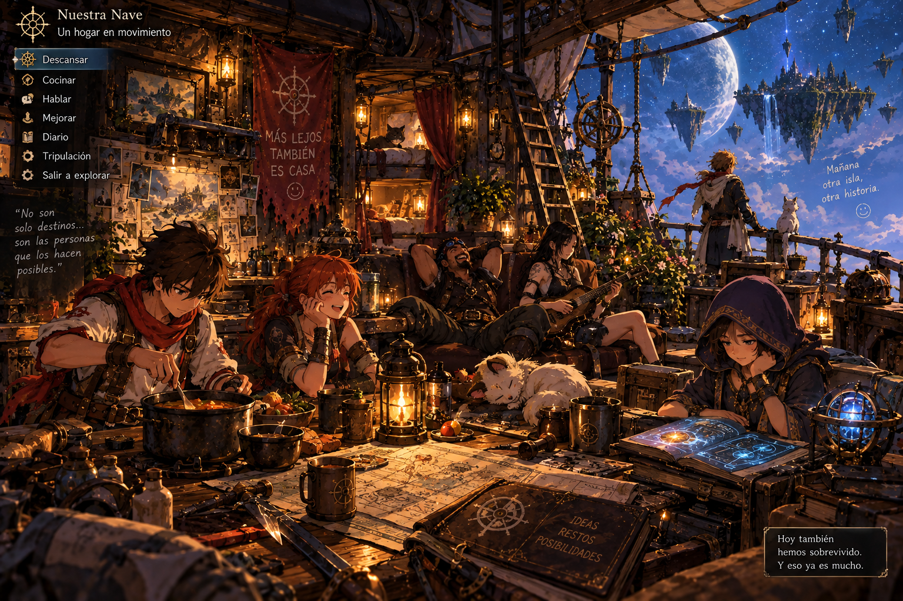
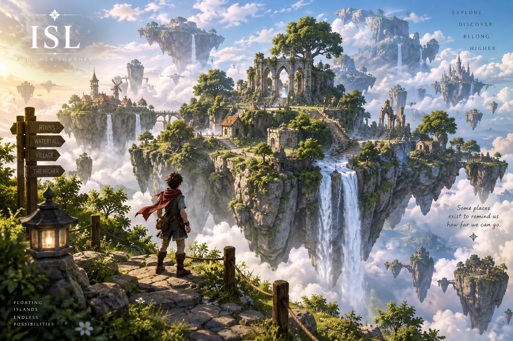
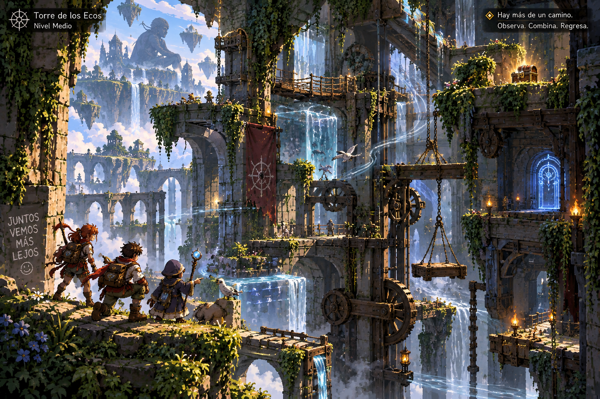
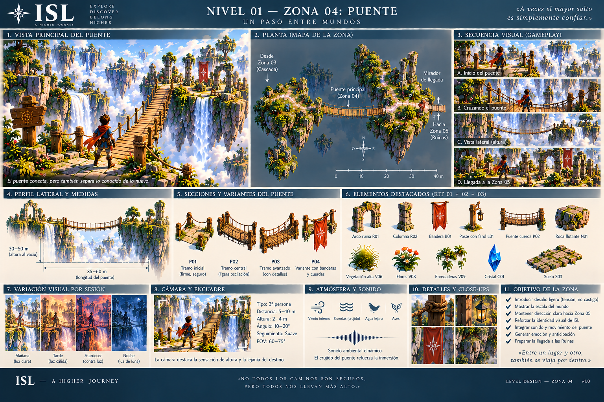
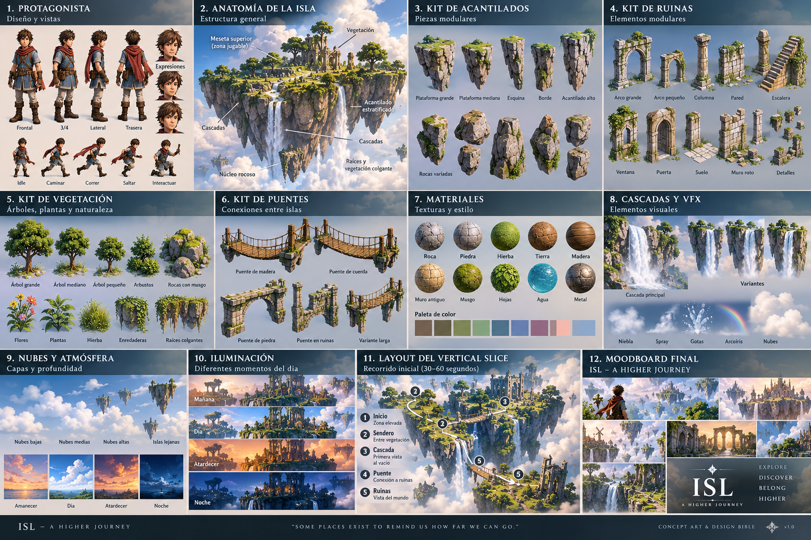

ISLAS VOLADORAS · ARCHIVO DE CORRIENTES
CUADERNO DE
NAVEGACIÓN 001
Una biblia física y provisional de un mundo que todavía está aprendiendo a existir.
MANIFIESTO
Crear es alterar el mundo.
Y todo lo que alteras termina alterándote.
Observa. Decide. Construye. Recuerda. Nada entra en CANON porque sea bonito; entra porque sobrevive al juego, al mundo y a la memoria.

El horizonteISL debe sentirse enorme sin perder la intimidad de una taza sobre cubierta.

La nave entre islasVehículo, casa, memoria, taller y punto de retorno.

Miradores y distanciaEl mundo se lee por capas: cerca, viaje y promesa.

Ciudad y vientoLas poblaciones deben tener reglas físicas, materiales y ritmos propios.

Laboratorio del vientoEl viento no es un efecto. Es sistema, cultura y navegación.

Torre de los EcosRuina suspendida, memoria visible y mecanismo con intención dudosa.

Ruinas celestesOscuridad = vulnerabilidad + consecuencia + incertidumbre. Nunca gore decorativo.

Puentes entre mundosLos caminos deben contar reglas, no sólo conectar plataformas.

Protagonista · exploraciónHoja de trabajo. ITERACIÓN, no CANON final.
MÚSICA · CIELO Y DESCENSO
Seis formas de
quedarse un rato en el cielo.

Biblia visual · islasReferencia de lenguaje. El laboratorio VIS-00 seguirá refinándolo.

Biblia de mundoUna imagen útil debe sugerir sociedad, física, historia y deseo.

Viaje y dirección artísticaEscala épica + hogar + rareza funcional.
COSAS QUE TODAVÍA NO EXISTEN
Reserva para futuros cielos.
FIN DEL VOLUMEN 001 · NO FIN DEL MUNDO
EL CIELO
CONTINÚA.
Checkpoint físico · 18 septiembre 2026